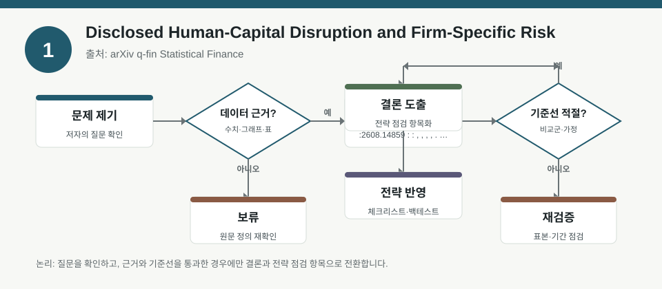
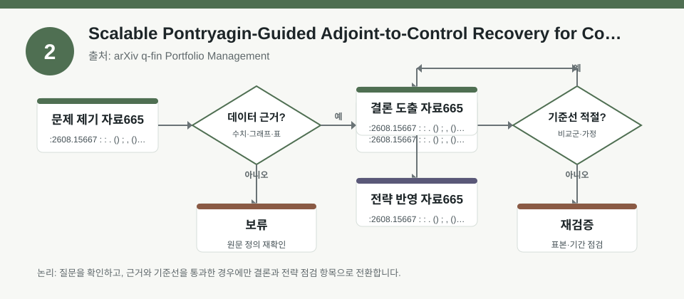
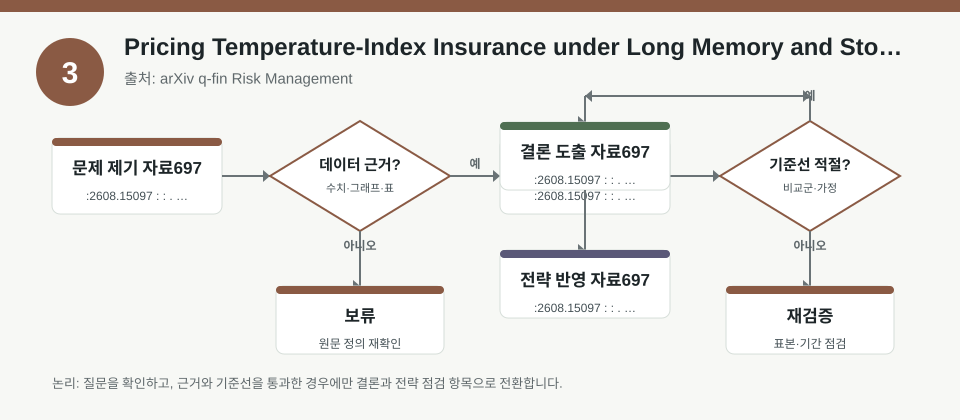

핵심 요약
- 결론: 이번 자료들은 공통적으로 “관측 가능한 숫자”보다 “어떤 리스크와 가정이 모델에 들어갔는지”를 먼저 확인해야 해석이 가능합니다.
- 원칙: 한국 투자자 관점에서는 KOSPI/KOSDAQ 업종 노출, 환율·금리·물가·변동성 민감도, 신용·규제 리스크가 실제 포트폴리오 제약조건과 맞는지 점검하는 방식이 유용합니다.
주목할 자료
| 번호 | 자료 | 출처 | 원문 | 핵심 내용 | 데이터 포인트 | 리스크/한계 |
|---|---|---|---|---|---|---|
| 1 | Disclosed Human-Capital Disruption and Firm-Specific Risk | arXiv q-fin Statistical Finance | 원문 보기 | 실적발표에서 인력 차질 관련 공시 신호를 정량화해 개별기업 리스크와 연결 | 비재무 공시 기반의 인간자본 충격 팩터, 기업별 리스크 프록시 | 코딩 기준과 문맥 판별의 재현성, 업종별 발언 패턴 차이 확인 필요 |
| 2 | Scalable Pontryagin-Guided Adjoint-to-Control Recovery for Constrained Dynamic Portfolio Choice | arXiv q-fin Portfolio Management | 원문 보기 | 제약이 있는 연속시간 포트폴리오 선택을 위해 경사·민감도 복구 프레임워크를 제안 | 제약조건 하 경로 민감도, 1차·2차 감도, 정책 최적화 구조 | 연속시간·매끄러운 제약 가정, 롤아웃 품질과 일반화 성능 검증 필요 |
| 3 | Pricing Temperature-Index Insurance under Long Memory and Stochastic Time Change | arXiv q-fin Risk Management | 원문 보기 | 장기기억과 시변 시간 구조를 반영해 기온지수 보험 가격을 산정하는 위험관리 틀 제시 | 장기기억, 확률적 시변화, 기후 리스크 가격화 프레임 | 기후 데이터의 지역성, 보정 파라미터, 실제 보험 손해분포와의 정합성 확인 필요 |
자료별 상세
1. Disclosed Human-Capital Disruption and Firm-Specific Risk

- 핵심: 실적발표에서 드러나는 인력 확보·유지·비용·기술 연속성 문제를 별도 신호로 읽어 기업 고유 리스크를 추정하는 접근입니다.
- 데이터 포인트: 재무제표 밖의 공시 텍스트를 팩터 입력으로 쓰므로, KOSPI/KOSDAQ에서 업종별 인력집약도와 언어 패턴 차이를 함께 봐야 합니다.
- 리스크: 저자 정의 코딩 기준과 문맥 해석이 핵심이어서, 동일 문구라도 업종별로 의미가 달라질 수 있습니다.
- 투자전략 반영 예시: 한국 투자자는 업종 노출 점검표에 인건비 상승, 숙련 인력 이탈, 생산 차질, 하도급 의존도 같은 항목을 추가해 기업별 리스크 메모를 남길 수 있습니다.
- 실행 예시: 최근 4개 분기 실적발표에서 인력 관련 키워드 빈도와 부정적 문맥을 따로 분리해, 포트폴리오의 업종별 민감도 체크리스트로 기록합니다.
2. Scalable Pontryagin-Guided Adjoint-to-Control Recovery for Constrained Dynamic Portfolio Choice

- 핵심: 제약이 있는 동적 자산배분 문제를 풀 때, 경로별 민감도와 제약 만족성을 함께 복원하는 계산 프레임워크가 핵심입니다.
- 데이터 포인트: 1차·2차 민감도와 정책 최적화 구조를 다뤄서, 리밸런싱 제약·비용·한도 조건이 성과보다 먼저 모델에 반영되는지 확인해야 합니다.
- 리스크: 연속시간, 매끄러운 제약, 시뮬레이션 롤아웃 품질에 의존하므로 실제 시장의 불연속 충격과 거래비용 급증 구간에서는 성능 검증이 필요합니다.
- 투자전략 반영 예시: 한국 투자자는 환율 노출, 금리 민감도, 업종 한도, 현금 비중 상한 같은 제약을 사전에 정의해 백테스트 조건표를 만들 수 있습니다.
- 실행 예시: KOSPI 대형주와 KOSDAQ 성장주 비중을 나눠 두고, 리밸런싱 빈도와 거래비용을 넣은 뒤 제약 위반 횟수와 회전율을 함께 점검합니다.
3. Pricing Temperature-Index Insurance under Long Memory and Stochastic Time Change

- 핵심: 기온지수 같은 기후 변수는 단기 평균만이 아니라 장기기억과 시간의 불규칙성을 반영해야 위험가격이 왜곡되지 않는다는 점을 보여줍니다.
- 데이터 포인트: 물가·농수산·전력·건설 같은 업종은 기후 충격이 실적 변동성과 연결될 수 있어, 한국 시장에서는 섹터별 간접 노출을 함께 검토할 필요가 있습니다.
- 리스크: 지역별 기후 데이터와 보정 파라미터가 달라질 수 있어, 국내 활용 시 한국 기상 데이터와 손해율 분포의 적합성을 따로 확인해야 합니다.
- 투자전략 반영 예시: 한국 투자자는 폭염·한파·강수 패턴이 원가와 수요에 미치는 영향을 업종 메모에 넣고, 계절성 변동성 확대 구간을 별도 스트레스 시나리오로 관리할 수 있습니다.
- 실행 예시: 포트폴리오 내 전력·식품·유통·건설 업종의 계절 민감도를 표로 정리하고, 기후 이벤트 발생 시 실적 추정치가 흔들리는 항목만 추적합니다.
팩터·리스크·포트폴리오 관점
- 핵심: 세 자료 모두 공통적으로 팩터는 “새로운 예측 신호”라기보다 “어떤 리스크를 어떤 가정으로 수치화했는가”를 보여주는 도구로 해석하는 편이 안전합니다.
- 검수: 실증 여부를 볼 때는 표본 구간, 제약조건, 거래비용, 텍스트 코딩 규칙, 지역 데이터 적합성, 백테스트 누수 가능성을 함께 확인해야 합니다.
정리
- 결론: 이번 자료는 한국 투자자에게 업종 노출, 환율·금리·물가·기후 민감도, 그리고 모델 가정을 함께 보는 체크리스트가 필요하다는 점을 시사합니다.
- 다음 확인: 수치 자체를 사실로 받아들이기보다, 각 논문의 데이터 정의와 백테스트 설계를 원문에서 먼저 검증해야 합니다.